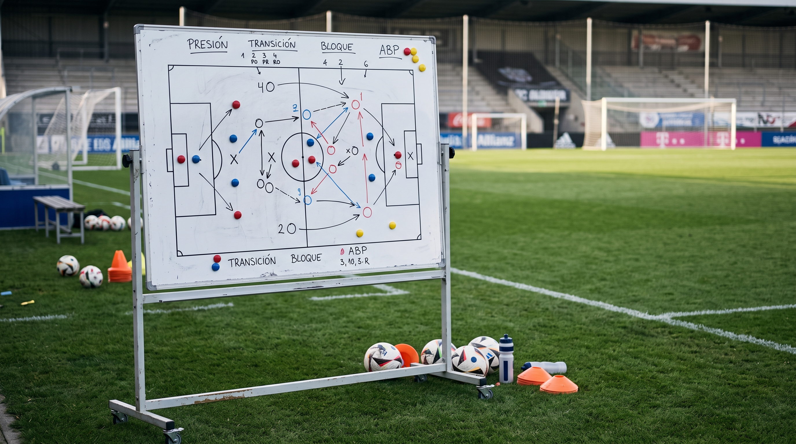

Conexión con las Federaciones Autonómicas
Vincula tu cuenta con tu federación regional para acceder a oportunidades exclusivas de empleo, prácticas, cursos e intercambios cerca de ti.
Conectamos a directores deportivos, scouts, analistas, entrenadores y coordinadores en un entorno especializado e integrado con el fútbol regional y nacional.
Conectamos a profesionales del sector asegurando la autenticidad de su trayectoria y especialidad dentro del ecosistema deportivo.
Vincula tu cuenta con tu federación regional para acceder a oportunidades exclusivas de empleo, prácticas, cursos e intercambios cerca de ti.
¿Eres gestor de la asociación? Acceso Administrador